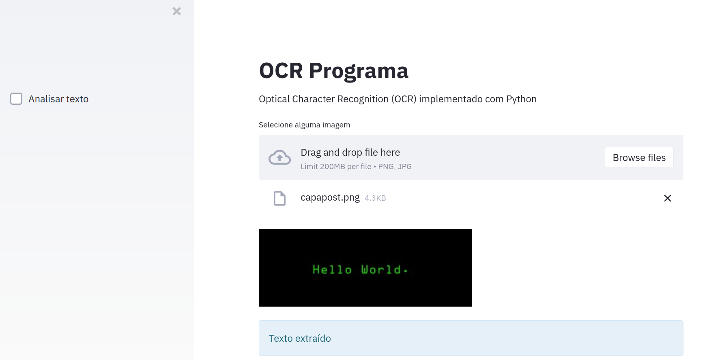
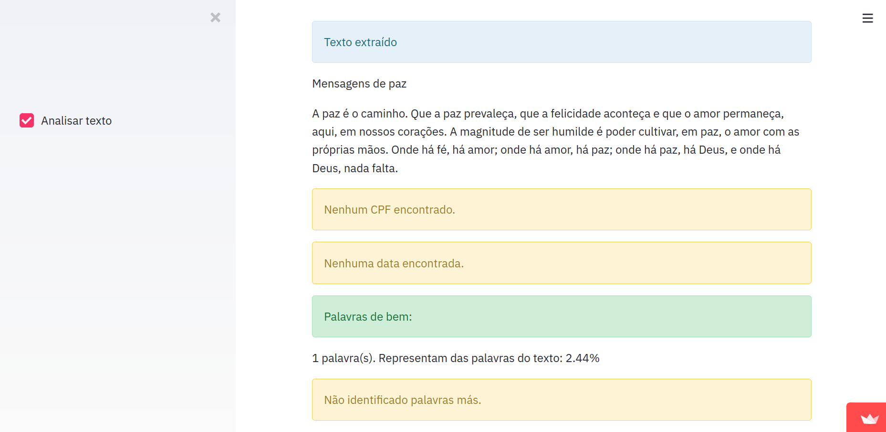

Página Inicial OCR Python
O programa utiliza da técnica de Optical Character Recognition (OCR), que é uma técnica da Inteligência Artificial para reconhecimento de caracteres em imagens.
Essa técnica é desenvolvida há anos e, atualmente, fazer aplicações nesse segmento está cada vez mais simplificado, como pode ser observado no código do programa.
O programa espera uma imagem como entrada e realiza a busca dos caracteres. Após identificar, podemos manipular da forma que quisermos. O programa OCR Python dá uma pequena demonstração de análise de texto com dois objetivos:
Essas coisas são pequenas demonstrações de automatização de análise de conteúdo e outros.
Tecnologias usadas: Python, Streamlit e Pytesseract.
código

